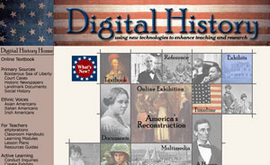
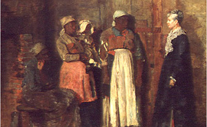

This is an archived copy of History Matters, provided by the Roy Rosenzweig Center for History and New Media. To explore this content in a new interface, visit Who Built America?.

Digital History: Using New Technologies to Enhance Teaching and Research
http://www.digitalhistory.uh.edu/
Steven Mintz and the University of Houston, in collaboration with the Chicago Historical Society; the Gilder Lehrman Institute of American History; the Museum of Fine Arts, Houston; American Voices: E Pluribus Unum; the National Park Service; and Teachers as HistoriansTeaching American History.
Feb. 20March 8, 2007.
Digital History is an ambitious and wide-ranging Web site that aims “to support the teaching of American History in K12 schools and colleges” through multimedia and interactive content. As such, it takes full advantage of the Internet’s potential to offer students access to materials that transcend printed media. It provides, for example, downloadable video lectures presented by such prominent scholars as David Blight, Noam Chomsky, and Howard Zinn; a series of “Digital Stories” that explore a number of topics, including slavery and the internment of Japanese Americans during World War II; and a Flash-based overview of American history. An easy-to-use module allows users to create their own virtual exhibitions using images available on the site (users cannot, however, upload their own images, undoubtedly as a result of copyright concerns) that can be downloaded and e-mailed as hyper text markup language (html) files stored in a zip archive. One of the most innovative and useful elements of Digital History is the “Ask the HyperHistorian” feature, essentially a means for students to ask a professional historian questions that arise from their own exploration of the sites content.

Central to Digital History's content is a wide-ranging selection of over three hundred annotated documents, covering U.S. history from Columbus to the Civil War, which has been culled from the Gilder Lehrman Collection and was originally published by Oxford University Press as The Boisterous Sea of Liberty in 1998 (edited by David Brion Davis and Steven Mintz). A well-structured teaching guide complements the collection, providing a step-by-step framework for using these documents in the classroom to introduce students to historical context, important historiographical debates, discussion questions, and critical analysis of primary sources. The site also emphasizes ethnic and immigrant history, providing a useful mix of historical context and extracts from memoirs and other personal documents to illuminate the complex experiences of African Americans, Native Americans, Mexican Americans, and Asian Americans. External links to hundreds of other important documents, images, historical maps, audio recordings, and even movie trailers relevant to U.S. political, legal, cultural, and social history are also provided; unfortunately, a small but significant number of these links were broken at the time of this review.
To further complement these documents, the site is currently developing a series of inquiry-based modules designed to encourage teachers and students alike to conduct their own research on historical questions, to use and critically evaluate primary sources, and to reach their own conclusions. The site has also partnered with the Chicago Historical Society to produce two online exhibits based on a pair of books written by Eric Foner and Olivia Mahoney, America’s Reconstruction: People and Politics after the Civil War (1995) and A House Divided: America in the Age of Lincoln (1990). These exhibits allow students to link visual representations of slavery and Reconstruction to some of the eyewitness accounts found elsewhere on the site.
The centerpiece of Digital History is an online textbook that describes itself as “an interactive, multimedia history” of North America from the pre-Columbian period to the aftermath of the September 11, 2001, terrorist attacks. Although this is the natural starting point for a new visitor to the site, it is also the project’s weakest section. The textbook is split into nearly fifty chapters generally organized chronologically—but with occasional thematic asides—that are then further divided into subchapters that range in length from four or five sentences to five or more paragraphs. Navigation is relatively straightforward, but would be strengthened by a contents page that lists both headings and subheadings, and by a more accessible search engine (as it is, the search function is hidden in a link at the bottom of the page).

The textbook is most appropriate for a high school audience. It has good—albeit at times perfunctory—coverage, discussing a broad range of subjects, with sections on all major social, ethnic, and racial groups. The chapter “America in Ferment: The Tumultuous 1960s,” for example, gives substantial coverage of such topics as the civil rights movement, Native American and Mexican American rights, feminism and the equal rights amendment, and the consumer movement. That chapter also includes detailed biographical sections on such notables as Thurgood Marshall, Rosa Parks, and Ralph Nader, but it glosses over other significant events and people such as the assassinations of John and Robert Kennedy, and the 1968 election. The textbook’s organization can also be somewhat confusing: for example, the chapter “Tragedy of the Plains Indians” is sandwiched between “The Impending Crisis” and “The Civil War,” while the chapter “Postwar America: 19451960” includes sections that describe the Bay of Pigs and the Cuban missile crisis. The later chapter, “Vietnam,” has more significant problems. Topics are illogically ordered and content is repeated across sections. As with the chapter that precedes it, “Vietnam” has subchapter headings that misrepresent their content. The subchapter “John Kennedy and Vietnam,” for example, spends more time describing Lyndon B. Johnson’s strategy in Vietnam than it does his predecessor’s; the next topic, “LBJ,” where one would have expected to find much of this discussion, is, in fact, a four-sentence summation of how the Tet Offensive informed Johnson’s decision to withdraw from the 1968 election. More seriously, however, “John Kennedy and Vietnam” covers much of the same ground as the previous section, “Into the Quagmire”—a third of its content (six of eighteen paragraphs) is repeated verbatim.
With a more carefully considered structure and greater editorial control, the textbook could be a useful resource for students and teachers, but because of its flaws it is unlikely to replace any traditional textbooks in the classroom any time soon. The site would greatly benefit if sections being developed were clearly labeled as being under construction. The textbook is a great success as a means of placing in a meaningful context the plethora of materials and activities found elsewhere on the Digital History site, and in providing a starting point for further classroom discussion.
The problems with the textbook notwithstanding, the site succeeds in maintaining a genuinely high standard of content and activities that provide both students and teachers an excellent resource with which to discuss and explore historical problems. Although the content is currently aimed predominantly at K12 educators, some of the material is likely to be of use in undergraduate survey courses—particularly the modules that train students to interact with and think critically about primary sources. Only those who have “done” digital history—that is, those who have actually attempted to put history online—can truly appreciate the time, energy, and resources needed to develop a site of this scope. The profession is indebted to the creators of Digital History for developing such a successful model for other scholars to follow, and the authors of this review eagerly await the project’s future development.
Simon Appleford and Vernon Burton
University of Illinois
Urbana, Illinois